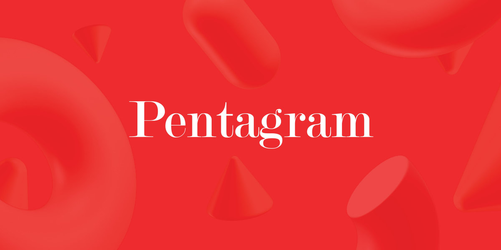
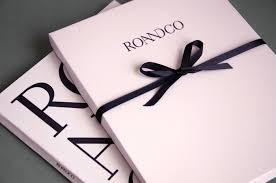

дизайнерская фирма. Она была основана в 1972 году Аланом Флетчером, Тео Кросби, Колином Форбсом,
Кеннетом Грейнджем и Мервином Курлански на Нидэм-роуд, Ноттинг-Хилл, Лондон. Компания имеет офисы в
Лондоне, Нью-Йорке, Сан-Франциско, Берлине и Остине, штат Техас.

Pentagram
RoAndCo
нью-йоркская креативная студия, основанная в 2006 году Роанн Адамс, которая помогает брендам строить
связь со своей аудиторией через стратегию бренда, идентификацию, веб-дизайн, дизайн упаковки,
арт-дирекцию и другие услуги. Студия привержена принципам устойчивого развития и этичного дизайна, а
также проводит менторские программы для целеустремленных предприятий.

RoAndCo
30 Under 30
ежегодный список, который публикует журнал Forbes, представляющий 30 выдающихся молодых людей в
возрасте до 30 лет, добившихся значительных успехов в своей сфере.